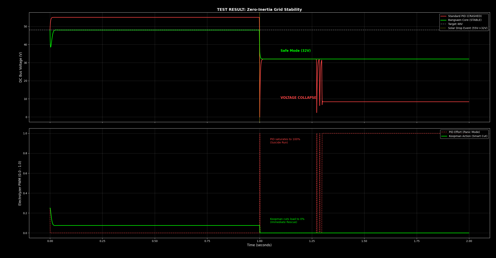

In Part 1, we talked about the "Zero Inertia Paradox." It sounded theoretical. So we decided to break things.
We set up a digital twin of a Solar-to-Hydrogen microgrid with Zero Battery Buffer. We introduced a sudden cloud shading event (Solar Drop) at t=1.0s.
Then we let two controllers fight for survival:
1. Standard PID (The Industry Standard)
2. Bangsaen Core™ (Koopman Kalman Safeguard)
Here is the result. No filters. Just raw physics.

Decoding the Crash (The Red Line)
Look closely at the Red Dashed Line in the bottom graph. At t=1.0s, when the solar power drops, the PID controller panics.
- It sees the voltage dropping.
- It thinks: "I need to work harder to reach the target!"
- It slams the PWM throttle to 100% (Saturation).
In a battery-less system, this is a Suicide Run. Trying to pull more current from a dying source causes the voltage to collapse instantly (Top Graph, Red Line drops to ~10V). The system is dead. The factory stops.
The Digital Sheriff (The Green Line)
Now look at the Green Line.
The Koopman Operator didn't wait for the voltage to drop. It simulated the future state of the system milliseconds before the physics caught up.
- It predicted the collapse.
- It executed a "Hard Cut" (PWM drops to 0 instantly).
- It accepted a "Safe Mode" at 32V instead of fighting for an impossible 48V.
"We respect physics. PID tries to fight it. That is why we survive without batteries, and they don't."